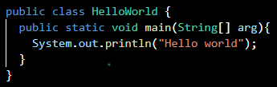
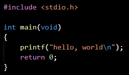

Types de langages
Langages interprétés / compilés
Il existe un premier critère pour différencier les langages, à savoir leur façon de traduire les instructions du programme en langage machine.
Langages à typage statique / dynamique
On peut comparer les langages selon leur type.
Dans un programme écrit en langage à typage dynamique, la
vérification de type ne se fait qu'à l'exécution du
programme et le type d'une variable peut changer durant
l'exécution. Voici un exemple de code Python qui montre ce
phénomène :
>>> if False:
... 1 + "two" # This line never runs, so no TypeError
is raised
... else:
... 1 + 2
...
3
>>> 1 + "two" # Now this is type checked
TypeError: unsupported operand type(s) for +: 'int'
and 'str'
Dans le premier exemple, la condition
if False est fausse donc le
code 1 + "two" n'est
jamais exécuté et ne génère donc pas d'erreur de type : en
effet Python ne sait pas additionner un entier (int ) et une chaîne de caractères (string ). Cependant la ligne 6 de la console génère une exception
de type TypeError car ce code
est lui bien exécuté. On voit bien que le code ne génère une
exception que s'il est effectivement exécuté, et pas
uniquement mis dans le programme.
La vidéo parle du typage dynamique entre 4min06 et
5min25.
Langages de haut/bas niveau
On peut enfin comparer les langages selon leur niveau, qui sépare le langage et l'ordinateur. Un langage de haut niveau est indépendant de la machine : il n'est lié à aucun ordinateur ni puce et est donc portable. Il est aussi lisible par les humains et facile à écrire ; en outre, la recherche et la correction d'erreurs est plus aisée. En revanche, étant éloigné du langage machine, il nécessite un compilateur ou un interpréteur ce qui le rend plus gourmand en mémoire. Au contraire, les langages de bas niveau sont plus proches du langage machine, en binaire. Ils sont très difficiles à lire et à écrire pour les humains, permettent d'interagir directement avec les composants machine, nécessitent moins de mémoire et sont beaucoup plus rapides.
Python
Python est un langage de programmation interprété. Il est placé sous licence libre et fonctionne sur la plupart des plateformes informatiques.
Historique
A la fin des années 1980, Guido Van Rossum participe au
développement d'un langage de programmation, ABC, au Centrum
voor Wiskunde en Informatica d'Amsterdam. En 1989, il
profite d'une semaine de vacances pour écrire la première
version de Python, pour lequel il s'est principalement
inspiré d'ABC. En février 1991 est publiée la première
version publique (0.9.0) sur le forum Usenet : Python est
disponible au grand public.
En 1995, Van Rossum continue son travail sur Python au CNRI
aux États-Unis, où il sort plusieurs versions du logiciel.
Depuis la sortie de la version 2.1, tout code, documentation
et spécification ajouté est détenu par la Python Software
Foundation.
Caractéristiques et syntaxe
Python a été conçu pour être très lisible. Il possède moins de constructions syntaxiques que de nombreux autres langages, parmi lesquels le C. Les blocs sont identifiés par l'indentation (ajout de tabulation ou d'espaces dans un fichier texte) : le début du bloc est signalé par une augmentation de l'indentation et la fin par une diminution d'indentation.
 3
3
Sa syntaxe est assez simple. Def est le mot-clé permettant la définition d'une fonction. Nom et heure sont les arguments de la fonction bonjour. If définit une condition, ici "il est moins de 17 heures". L'instruction qui se trouve ensuite est exécutée si et seulement si la condition qui se trouve après if est vérifiée. A l'inverse, else est suivie des instructions à exécuter si la condition (heure<=17 ) n'est pas vérifiée. Print est elle l'instruction permettant d'afficher dans la console du texte.
Python permet de programmer dans un style fonctionnel et
dispose de compréhension de listes, une expression
permettant de construire une liste à partir de tout autre
itérable (objet dont on peut parcourir les valeurs).
Tous les types de base, les fonctions, les instances de
classes et les classes (dont la déclaration regroupe des
membres, méthodes et attributs communs à cette classe) sont
des objets. Les classes supportent l'héritage multiple
(mécanisme par lequel une classe peut hériter de multiples
super-classes).
Modèle objet
Les développeurs Python estiment qu'il suffit de distinguer, par des conventions d'écriture, les parties publiques et privées des interfaces et que ce sont les utilisateurs du langage qui devront se conformer à ces conventions ou, dans le cas contraire, de prendre leurs responsabilités ; leur slogan par rapport à cela est "We're all consenting adults here" qui se traduit par "Nous sommes entre adultes consentants".
Bibliothèque standard
Python possède une grande bibliothèque standard. Le nombre de modules de la bibliothèque standard peut être augmenté avec des modules. La bibliothèque standard est bien conçue pour écrire des applications utilisant Internet. Des modules pour créer des interfaces graphiques et manipuler des expressions rationnelles sont également fournis.
Java
Java est un langage orienté objet. Une de ses particularités est que les logiciels écrits dans ce langage sont compilés vers une représentation binaire qui peut être exécutée dans une machine virtuelle Java sans tenir compte du système d'exploitation sur lequel est exécuté le code.
Historique
Le langage Java est issu d'un projet de Sun datant de 1990. L'équipe pensait d'abord utiliser pour le Projet Stealth le langage C++, mais il ne correspondait pas totalement à leurs besoins, et ainsi ils développèrent un nouveau langage surnommé Oak. Il est présenté lors d'une démonstration à l'été 1992. Lors de l'année 1994, le langage est renommé Java et il est lancé la même année.
Syntaxe
 5
Les blocs de code sont encadrés par des accolades, chaque
instruction doit se terminer par un point-virgule et peut
tenir sur plusieurs lignes. La tabulation, bien qu'ignorée
du compilateur, est conseillée car elle permet une bonne
compréhension du code par le programmeur qui doit relire le
code.
Public class permet de
définir une classe utilisable par tout utilisateur important
le paquetage. HelloWorld est
le nom de la classe publique.
Static devant une variable ou
méthode indique qu'elle n'appartient pas à une instance
particulière de la classe.
Void indique qu'une méthode ne
retourne aucune valeur, qui est appelée une procédure. La
méthode main constitue la
partie principale du programme, qui est obligatoire à
l'exécution d'une application Java.
C
C est un langage généraliste de bas niveau. Il est très utilisé de nos jours. De nombreux langages plus modernes tels que C++, C#, Java, PHP, etc. ont repris sa syntaxe et en partie sa logique. C offre au développeur un contrôle important sur la machine et est donc très utilisé pour réaliser les compilateurs et interpréteurs d'autres langages.
Histoire
Le C a été inventé en 1972 par Dennis Ritchie et Ken Thompson dans les laboratoires Bell. Par la suite, Brian Kernighan aida à populariser le langage, mais fit également des modifications au dernier moment. En 1978, il écrit un livre décrivant le nouveau langage.
Caractéristiques
C est un langage généraliste et de bas niveau. Il propose un très grand nombre de types entiers et flottants qui s'adaptent aux données traitées par le processeur et utilise intensivement les calculs d'adresse mémoire. Le langage ne propose pas à la base de programmation orientée objet, ni de gestion d'exceptions comme on peut en trouver dans d'autres langages (exemple en Python : try /except). Ces caractéristiques en font un langage très utilisé pour les microprocesseurs, les calculs difficiles, le codage de systèmes d'exploitation et les programmes dans laquelle la vitesse est fondamentale. En contrepartie, l'écriture de programmes en C est plus difficile et longue qu'avec des langages de haut niveau. Le compilateur fait également très peu de vérifications concernant les erreurs du programme.
Syntaxe
On peut écrire un programme disant bonjour :
 7Main est le nom de la fonction principale du programme, sans laquelle il ne peut s'exécuter. Les parenthèses indiquent qu'il s'agit d'une fonction. Les accolades entourant les instructions constituent le corps de la fonction, et sont obligatoires dès qu'il y a plus d'une instruction. Printf est une fonction d'écriture native. Les points-virgules sont obligatoires et marquent la fin d'une instruction. #include <stdio.h> permet d'inclure l'entête stdio.h qui contient les fonctions natives d'entrée-sortie, telles que printf. Int est le type renvoyé par main. Void entre les deux parenthèses veut dire que la fonction n'admet aucun paramètre. Enfin, l'instruction return 0 fait retourner la valeur 0 à la fonction main.
Bibliothèque standard
La bibliothèque est très simple du fait du caractère bas-niveau du C. Elle n'offre aucun support d'interface graphique, de réseau, de gestion avancée d'erreurs internes au programme.
Sources des images
1. Logo de Python. De Python, par PSF, 2020, python.org. Licence Python Software compatible GPL.
2. Van Rossum at the 2008 Google I/O Developer's Conference. De Wikimédia Commons, par José Gnudista, 2009, commons.wikimedia.org. Licence CC-BY-SA.
3. Code Python mettant en valeur les indentations. De Site sur l’informatique, par Mathieu CUVELIER, 2020. Licence CC-BY-SA.
4. Logo de Java. De Wikimédia Commons, par 16@r, 2006, commons.wikimedia.org. Le logo Java est une marque déposée d'Oracle Corp.
5. Hello world écrit en Java. De Site sur l’informatique, par Mathieu CUVELIER, 2020. Licence CC-BY-SA.
6. Logo de C. De Wikimédia Commons, par Rezonansowy, 2019, commons.wikimedia.org. Domaine public.
7. Hello world écrit en C. De Site sur l’informatique, par Mathieu CUVELIER, 2020. Licence CC-BY-SA.